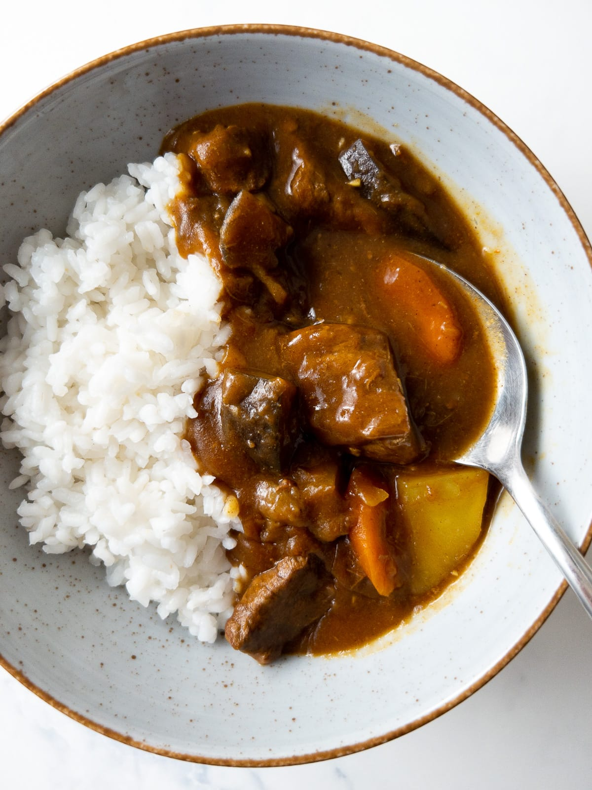

Back
Japanese Curry

Japanese curry, also known as "Kare Raisu," is a popular Japanese dish
that consists of a thick, savory curry sauce served over rice.
Japanese curry is different from other curries in that it is less
spicy and has a sweeter taste. It is typically made with a blend of
curry powder, soy sauce, and other seasonings, and can be customized
with a variety of meats and vegetables. Japanese curry is a hearty and
comforting meal that is perfect for cold weather or any time you
crave a warm and satisfying meal. It is a versatile dish that can
be customized to your liking by adding different meats and vegetables,
and its mild and sweet flavor makes it a great option for those who are
sensitive to spicy foods.
Here's a recipe for making Japanese curry:
Ingredients:
- 1 pound meat (chicken, beef, or pork), cut into bite-sized pieces
- 2 tablespoons vegetable oil
- 1 onion, chopped
- 2 cloves garlic, minced
- 2 carrots, chopped
- 2 potatoes, chopped
- 2 tablespoons curry powder
- 2 tablespoons flour
- 2 tablespoons soy sauce
- 1 tablespoon honey
- 1 teaspoon salt
- 4 cups water
- Cooked rice, for serving
Instructions:
- In a large pot or Dutch oven, heat the vegetable oil over medium-high heat.
Add the chopped onion and garlic and sauté for 2-3 minutes, or until the
onion is translucent.
- Add the bite-sized pieces of meat to the pot and
cook until browned on all sides.
- Add the chopped carrots and potatoes to the pot and stir to combine.
- In a small bowl, mix together the curry powder and flour.
Add the curry powder mixture to the pot and stir to coat the
meat and vegetables.
- Add the soy sauce, honey, salt, and water to the pot and stir to combine.
Bring the mixture to a boil, then reduce the heat to low and cover the pot
with a lid.
- Allow the curry to simmer for 30-40 minutes, or until the meat is tender
and the vegetables are cooked through.
- Serve the curry over cooked rice.